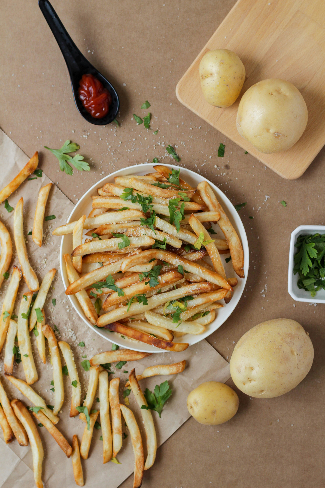

A classic, restaurant-style French fries recipe produces crispy, golden-brown sticks that are fluffy on the inside, typically achieved through a double-frying technique. The process involves using high-starch potatoes (like Russet or Idaho), soaking them to remove excess starch, drying them thoroughly, and frying them twice first at a lower temperature to cook through, and then at a higher temperature to crisp. Follow this recipe for a restaurant like french fry at the comfort of your home.